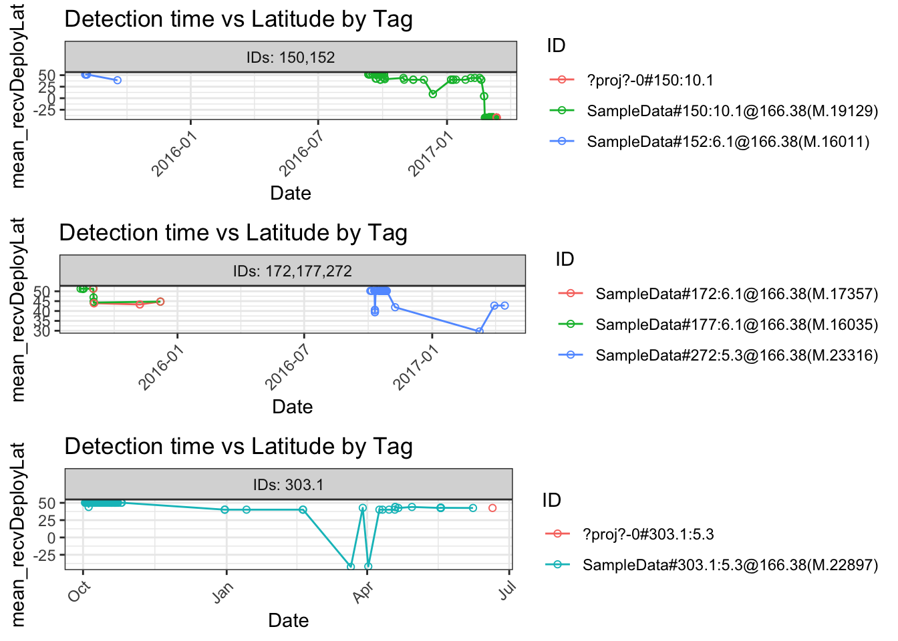
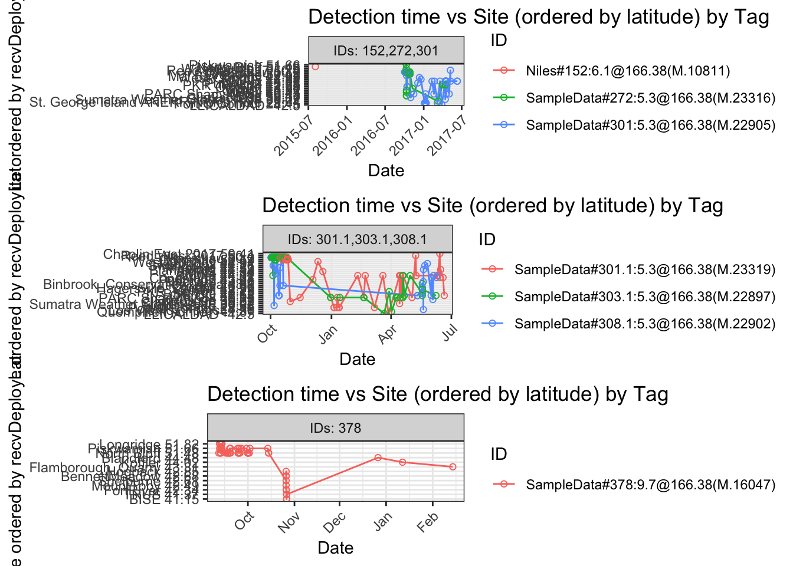
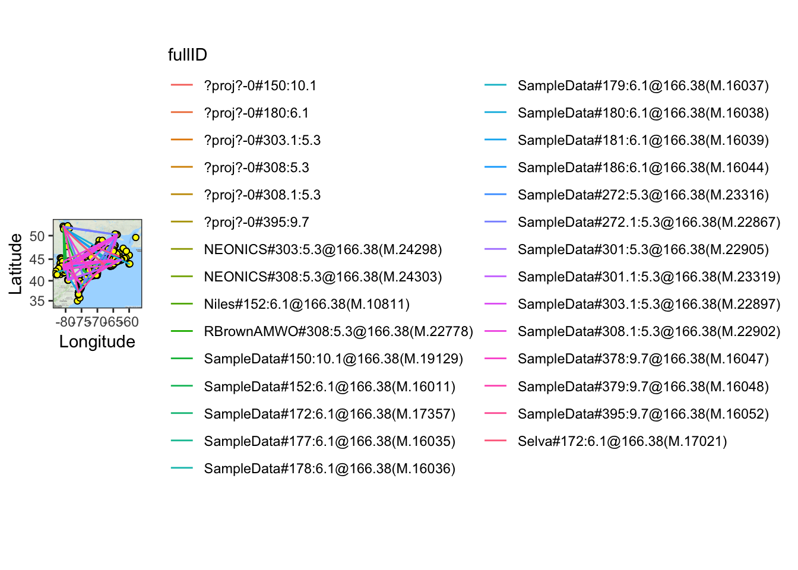

C Annexe C - Le logiciel R de Motus
Le logiciel R de Motus comprend des fonctions qui permettent d’effectuer des calculs communs et de produire des sommaires, des graphiques et des cartes avec les données .motus. Cette annexe présente ces fonctions et des exemples de leur utilisation. Bon nombre des fonctions sont utilisables dans les formats tbl et data.frame; toutefois, pour certaines, les données doivent être dans le format sql tel que spécifié ci-après. Le chapitre 3 présente des marches à suivre détaillées pour accéder aux données et les formater. Les exemples présentés tout au long de ce chapitre sont basés sur les données du projet 176 (Programme de suivi des oiseaux de rivage de la baie James) utilisées comme exemples, auxquelles on peut accéder et qu’on peut convertir dans différents formats par l’intermédiaire du code suivant:
# Télécharger les données fournies comme exemples
# dans le format sql et y accéder, nom
# d'utilisateur: motus.sample, mot de passe:
# motus.sample
sql.motus <- tagme(176, new = TRUE, update = TRUE,
dir = "./data")
# Extraire la table «alltags» du fichier sql
# «sql.motus».
tbl.alltags <- tbl(sql.motus, "alltags")
## Convertir la table «tbl.alltags» en une trame de
## données appelée «df.alltags».
df.alltags <- tbl.alltags %>% collect() %>% as.data.frame()Vous pouvez accéder aux pages d’aide relatives aux fonctions en utilisant «??sunRiseSet» dans la console R. Vous pouvez aussi voir le code sous-jacent à la fonction comme suit:
sunRiseSetC.1 checkVersion
C.1.1 Description
Lorsque vous appelez la fonction tagme() pour charger la base de données sqlite, le système vérifie que la version de votre base de données correspond à la plus récente version du logiciel motus et stocke la version dans une nouvelle table appelée admInfo. Au fil du temps, des changements sont apportés qui nécessitent l’ajout de tables, de vues ou de champs à la base de données. La fonction suivante vérifie que la version de votre base de données a été mise à jour de manière à correspondre à la version courante du logiciel motus. Si le système affiche un avertissement, reportez-vous à l’annexe B pour savoir quoi faire. Si la version de votre base de données n’est pas à jour, reportez-vous au chapitre 2 pour savoir comment mettre à jour les versions des logiciels motus et motusClient.
C.1.2 Dépendances
sql.motus Une base sqlite de données .motus téléchargée au moyen de la fonction tagme()
C.1.3 Exemple
checkVersion(sql.motus)C.2 sunRiseSet
C.2.1 Description
Cette fonction crée une variable heure du lever du soleil (sunrise) et heure du coucher du soleil (sunset) et l’ajoute à une trame de données comprenant des valeurs de latitude, de longitude et de date/heure dans le format POSIXct ou numérique.
C.2.2 Dépendances
data Peut être une table choisie à partir de données de détection .motus, p. ex., «alltags», ou une trame de données de détection incluant au minimum les variables date/heure, latitude et longitude.
lat Variable avec valeurs de latitude, par défaut les valeurs de recvDeployLat.
lon Variable avec valeurs de longitude, par défaut les valeurs de recvDeployLon.
ts Variable de l’heure UTC dans le format numérique ou POSIXct, par défaut les valeurs de ts.
C.2.3 Exemple
Ajout des variables sunrise/sunset à la trame de données alltags
alltags.df.sun <- sunRiseSet(df.alltags)
head(alltags.df.sun)## hitID runID batchID ts sig sigsd noise freq freqsd
## 1 45107 8886 53 2015-10-26 11:19:49 52 0 -96 4 0
## 2 45108 8886 53 2015-10-26 11:20:28 54 0 -96 4 0
## 3 45109 8886 53 2015-10-26 11:21:17 55 0 -96 4 0
## 4 45110 8886 53 2015-10-26 11:21:55 52 0 -96 4 0
## 5 45111 8886 53 2015-10-26 11:22:44 49 0 -96 4 0
## 6 199885 23305 64 2015-10-26 11:12:04 33 0 -96 4 0
## slop burstSlop done motusTagID ambigID port runLen bootnum tagProjID
## 1 1e-04 0.0000 1 16047 NA 3 5 11 176
## 2 1e-04 -0.0021 1 16047 NA 3 5 11 176
## 3 1e-04 0.0001 1 16047 NA 3 5 11 176
## 4 1e-04 -0.0010 1 16047 NA 3 5 11 176
## 5 1e-04 0.0001 1 16047 NA 3 5 11 176
## 6 1e-04 0.0000 1 16047 NA 1 11 4 176
## mfgID tagType codeSet mfg tagModel tagLifespan nomFreq tagBI pulseLen
## 1 378 ID Lotek4 Lotek NTQB-3-2 NA 166.38 9.6971 2.5
## 2 378 ID Lotek4 Lotek NTQB-3-2 NA 166.38 9.6971 2.5
## 3 378 ID Lotek4 Lotek NTQB-3-2 NA 166.38 9.6971 2.5
## 4 378 ID Lotek4 Lotek NTQB-3-2 NA 166.38 9.6971 2.5
## 5 378 ID Lotek4 Lotek NTQB-3-2 NA 166.38 9.6971 2.5
## 6 378 ID Lotek4 Lotek NTQB-3-2 NA 166.38 9.6971 2.5
## tagDeployID speciesID markerNumber markerType tagDeployStart
## 1 1839 4670 135268103 metal band 1441908000
## 2 1839 4670 135268103 metal band 1441908000
## 3 1839 4670 135268103 metal band 1441908000
## 4 1839 4670 135268103 metal band 1441908000
## 5 1839 4670 135268103 metal band 1441908000
## 6 1839 4670 135268103 metal band 1441908000
## tagDeployEnd tagDeployLat tagDeployLon tagDeployAlt
## 1 1457632800 51.4839 -80.45 NA
## 2 1457632800 51.4839 -80.45 NA
## 3 1457632800 51.4839 -80.45 NA
## 4 1457632800 51.4839 -80.45 NA
## 5 1457632800 51.4839 -80.45 NA
## 6 1457632800 51.4839 -80.45 NA
## tagDeployComments
## 1 {"ageID":"HY","bill":36.5,"blood":"Y","country":"Canada","culmen":36.5,"fatScore":3,"locationID":"NorthPoint_net","province":"Ontario","sexID":"U","tarsus":33.3,"weight":137.8,"wing":162,"comments":null}
## 2 {"ageID":"HY","bill":36.5,"blood":"Y","country":"Canada","culmen":36.5,"fatScore":3,"locationID":"NorthPoint_net","province":"Ontario","sexID":"U","tarsus":33.3,"weight":137.8,"wing":162,"comments":null}
## 3 {"ageID":"HY","bill":36.5,"blood":"Y","country":"Canada","culmen":36.5,"fatScore":3,"locationID":"NorthPoint_net","province":"Ontario","sexID":"U","tarsus":33.3,"weight":137.8,"wing":162,"comments":null}
## 4 {"ageID":"HY","bill":36.5,"blood":"Y","country":"Canada","culmen":36.5,"fatScore":3,"locationID":"NorthPoint_net","province":"Ontario","sexID":"U","tarsus":33.3,"weight":137.8,"wing":162,"comments":null}
## 5 {"ageID":"HY","bill":36.5,"blood":"Y","country":"Canada","culmen":36.5,"fatScore":3,"locationID":"NorthPoint_net","province":"Ontario","sexID":"U","tarsus":33.3,"weight":137.8,"wing":162,"comments":null}
## 6 {"ageID":"HY","bill":36.5,"blood":"Y","country":"Canada","culmen":36.5,"fatScore":3,"locationID":"NorthPoint_net","province":"Ontario","sexID":"U","tarsus":33.3,"weight":137.8,"wing":162,"comments":null}
## fullID deviceID recvDeployID recvDeployLat
## 1 SampleData#378:9.7@166.38(M.16047) 486 2510 42.60699
## 2 SampleData#378:9.7@166.38(M.16047) 486 2510 42.60699
## 3 SampleData#378:9.7@166.38(M.16047) 486 2510 42.60699
## 4 SampleData#378:9.7@166.38(M.16047) 486 2510 42.60699
## 5 SampleData#378:9.7@166.38(M.16047) 486 2510 42.60699
## 6 SampleData#378:9.7@166.38(M.16047) 515 2512 42.68067
## recvDeployLon recvDeployAlt recv recvDeployName recvSiteName
## 1 -72.71657 NA Lotek-159 Shelburne <NA>
## 2 -72.71657 NA Lotek-159 Shelburne <NA>
## 3 -72.71657 NA Lotek-159 Shelburne <NA>
## 4 -72.71657 NA Lotek-159 Shelburne <NA>
## 5 -72.71657 NA Lotek-159 Shelburne <NA>
## 6 -72.47392 NA Lotek-164 BennettMeadow <NA>
## isRecvMobile recvProjID antType antBearing antHeight speciesEN
## 1 0 74 yagi-9 127 NA Red Knot
## 2 0 74 yagi-9 127 NA Red Knot
## 3 0 74 yagi-9 127 NA Red Knot
## 4 0 74 yagi-9 127 NA Red Knot
## 5 0 74 yagi-9 127 NA Red Knot
## 6 0 74 yagi-9 243 NA Red Knot
## speciesFR speciesSci speciesGroup tagProjName
## 1 Bécasseau maubèche Calidris canutus BIRDS SampleData
## 2 Bécasseau maubèche Calidris canutus BIRDS SampleData
## 3 Bécasseau maubèche Calidris canutus BIRDS SampleData
## 4 Bécasseau maubèche Calidris canutus BIRDS SampleData
## 5 Bécasseau maubèche Calidris canutus BIRDS SampleData
## 6 Bécasseau maubèche Calidris canutus BIRDS SampleData
## recvProjName gpsLat gpsLon gpsAlt sunrise
## 1 <NA> NA NA NA 2015-10-26 11:16:49
## 2 <NA> NA NA NA 2015-10-26 11:16:49
## 3 <NA> NA NA NA 2015-10-26 11:16:49
## 4 <NA> NA NA NA 2015-10-26 11:16:49
## 5 <NA> NA NA NA 2015-10-26 11:16:49
## 6 <NA> NA NA NA 2015-10-26 11:15:58
## sunset
## 1 2015-10-26 21:52:11
## 2 2015-10-26 21:52:11
## 3 2015-10-26 21:52:11
## 4 2015-10-26 21:52:11
## 5 2015-10-26 21:52:11
## 6 2015-10-26 21:51:06C.3 plotAllTagsCoord
C.3.1 Description
Cette fonction pointe sur un graphique la latitude/longitude par rapport à l’heure (UTC arrondie à l’heure près) pour chaque émetteur à partir des données de détection .motus. Par défaut, les coordonnées géographiques sont tirées des enregistrements effectués par les GPS des récepteurs.
C.3.2 Dépendances
data Peut être une table choisie à partir de données de détection .motus, p. ex., «alltags», ou une trame de données de détection incluant au minimum les variables date/heure et latitude ou longitude.
tagsPerPanel Nombre d’émetteurs indiqués dans chaque panneau du graphique, par défaut 5.
coordinate Variable avec valeurs de position, par défaut les valeurs de recvDeployLat.
ts Variable de l’heure UTC dans le format numérique ou POSIXct, par défaut les valeurs de ts.
recvDepName Variable du nom du lieu de déploiement du récepteur.
fullID Variable de l’identifiant complet de l’émetteur. mfgID Variable de l’identifiant de l’émetteur attribué par le fabricant.
C.3.3 Exemple
Pointage sur un graphique des coordonnées de certains émetteurs à partir d’une table tbl.alltags, à raison de 3 émetteurs par panneau
plotAllTagsCoord(filter(tbl.alltags, motusTagID %in%
c(19129, 16011, 17357, 16035, 22897, 23316)), tagsPerPanel = 3)
C.4 plotAllTagsSite
C.4.1 Description
Cette fonction pointe sur un graphique la latitude/longitude par rapport à l’heure (UTC arrondie à l’heure près) pour chaque émetteur à partir des données de détection .motus. Par défaut, les coordonnées sont tirées des enregistrements de la latitude effectués par les GPS des récepteurs.
C.4.2 Dépendances
data Peut être une table choisie à partir de données de détection .motus, p. ex., «alltags», ou une trame de données de détection incluant au minimum les variables date/heure et latitude ou longitude.
tagsPerPanel Nombre d’émetteurs indiqués dans chaque panneau du graphique, par défaut 5.
coordinate Variable avec valeurs de position, par défaut les valeurs de recvDeployLat.
ts Variable de l’heure UTC dans le format numérique ou POSIXct, par défaut les valeurs de ts.
recvDepName Variable du nom du lieu de déploiement du récepteur.
fullID Variable de l’identifiant complet de l’émetteur. mfgID Variable de l’identifiant de l’émetteur attribué par le fabricant.
C.4.3 Exemple
Pointage sur un graphique des coordonnées à partir d’une table tbl.alltags pour l’espèce choisie, à savoir le Bécasseau maubèche, à raison de 3 émetteurs par panneau.
plotAllTagsSite(filter(tbl.alltags, speciesEN == "Red Knot"),
coordinate = "recvDeployLat", tagsPerPanel = 3)## Warning: Missing values are always removed in SQL.
## Use `AVG(x, na.rm = TRUE)` to silence this warning
C.5 plotDailySiteSum
C.5.1 Description
Cette fonction pointe sur des graphiques le nombre total de détections de tous les émetteurs et le nombre total d’émetteurs détectés, par jour, à un site déterminé. Elle dépend de la fonction siteSumDaily.
C.5.2 Dépendances
data Une table choisie à partir de données de détection .motus, p. ex., «alltags», ou une trame de données de détection incluant au minimum les variables motusTagID, sig, recvDepName et ts.
motusTagID Variable consistant en un identifiant d’émetteur motus (motus tag ID).
sig Variable de puissance de signal.
recvDepName Variable du nom du lieu de déploiement du récepteur.
ts Variable de la date et de l’heure dans le format numérique ou POSIXct, par défaut les valeurs de ts.
C.5.3 Exemple
Pointage sur des graphiques du nombre total de détections de tous les émetteurs et du nombre total d’émetteurs détectés au site Longridge à partir de data.frame et df.alltags
plotDailySiteSum(df.alltags, recvDeployName = "Longridge")C.6 plotRouteMap
C.6.1 Description
Cette fonction pointe sur une carte Google les trajectoires d’émetteurs détectés, la trajectoire de chaque émetteur étant représentée par une couleur distincte. L’utilisateur fixe un intervalle de temps entre deux dates pour que la carte indique la position des récepteurs qui fonctionnaient à un moment donné pendant cet intervalle. ### Dépendances data Un fichier sql .motus.
maptype Type de carte Google à afficher: relief, plan, satellite ou hybride.
latCentre Latitude du point central de la carte.
lonCentre Longitude du point central de la carte.
zoom Nombre entier de 3 à 21, 3 correspondant au niveau du continent et 10 au niveau de la localité.
recvStart Date du début de l’intervalle de temps pour l’indication des récepteurs actifs.
recvEnd Date de la fin de l’intervalle de temps pour l’indication des récepteurs actifs.
C.6.2 Exemple
Pointage sur une carte de trajectoires de type «relief» à partir de toutes les données de détection, avec indication des récepteurs actifs entre le 1er janvier 2016 (2016-01-01) et le 1er janvier 2017 (2017-01-01).
plotRouteMap(sql.motus, maptype = "terrain", latCentre = 44,
lonCentre = -70, zoom = 5, recvStart = "2016-01-01",
recvEnd = "2016-12-31")## Map from URL : http://maps.googleapis.com/maps/api/staticmap?center=44,-70&zoom=5&size=640x640&scale=2&maptype=terrain&language=en-EN&sensor=false## Warning: Removed 120 rows containing missing values (geom_point).## Warning: Removed 685 rows containing missing values (geom_path).
C.7 plotSite
C.7.1 Description
C.7.2 Dépendances
data Une table choisie à partir de données de détection .motus, p. ex., «alltags», ou une trame de données de détection incluant au minimum les variables ts, antBearing, fullID et recvDepName.
ts Variable de la date et de l’heure dans le format numérique ou POSIXct, par défaut les valeurs de ts.
antBearing Variable de l’angle de relèvement de l’antenne.
fullID Variable de l’identifiant complet de l’émetteur.
recvDepName Variable du nom du lieu de déploiement du récepteur.
C.7.3 Exemple
Pointage seulement des données de détection à un site particulier (Piskwamish) à partir de data.frame et de df.alltags.
plotSite(filter(df.alltags, recvDeployName == "Piskwamish"))C.8 plotSiteSig
C.8.1 Description
Cette fonction pointe sur un graphique la puissance du signal par rapport au temps de l’année pour tous les émetteurs détectés à un site particulier, les couleurs variant selon la gamme des angles de relèvement des antennes.
C.8.2 Dépendances
data Une table choisie à partir de données de détection .motus, p. ex., «alltags», ou une trame de données de détection incluant au minimum les variables antBearing, ts, lat, sig, fullID et recvDepName.
antBearing Variable de l’angle de relèvement de l’antenne.
ts Variable de la date et de l’heure dans le format numérique ou POSIXct, par défaut les valeurs de ts.
recvDeployLat Variable de la latitude de la position du récepteur.
sig Variable de la puissance du signal de l’émetteur.
fullID Variable de l’identifiant complet de l’émetteur.
recvDepName Variable du nom du lieu de déploiement du récepteur.
C.8.3 Exemple
Pointage de la puissance du signal de certains émetteurs détectés au site de Piskwamish.
plotSiteSig(filter(df.alltags, motusTagID %in% c(16037,
16039, 16035)), recvDeployName = "Netitishi")C.9 plotTagSig
C.9.1 Description
Cette fonction pointe sur un graphique la puissance du signal d’un émetteur particulier par rapport au temps de l’année, à raison d’un panneau de graphique par site (dans l’ordre de la latitude), les couleurs variant selon la gamme des angles de relèvement des antennes.
C.9.2 Dépendances
data Une table choisie à partir de données de détection .motus, p. ex., «alltags», ou une trame de données de détection incluant au minimum les variables motusTagID, sig, ts, antBearing, recvDeployLat, fullID et recvDepName.
motusTagID Variable de l’identifiant de l’émetteur Motus.
antBearing Variable de l’angle de relèvement de l’antenne.
ts Variable de la date et de l’heure dans le format numérique ou POSIXct, par défaut les valeurs de ts.
recvDeployLat Variable de la latitude de la position du récepteur.
sig Variable de la puissance du signal de l’émetteur. fullID Variable de l’identifiant complet de l’émetteur. recvDepName Variable du nom du lieu de déploiement du récepteur.
C.9.3 Exemple
Pointage de la puissance du signal d’un émetteur particulier à partir de la table de données tbl.alltags.
plotTagSig(tbl.alltags, motusTagID = 16035)C.10 simSiteDet
C.10.1 Description
Cette fonction crée une trame de données comprenant seulement les données de détection des émetteurs détectés par deux récepteurs ou plus en même temps.
C.10.2 Dépendances
data Une table choisie à partir de données de détection .motus, p. ex., «alltags», ou une trame de données de détection incluant au minimum les variables ts, motusTagID et recvDepName.
ts Variable de la date et de l’heure dans le format numérique ou POSIXct, par défaut les valeurs de ts.
motusTagID Variable de l’identifiant de l’émetteur Motus.
recvDepName Variable du nom du lieu de déploiement du récepteur.
C.10.3 Exemple
Obtention, à partir d’une trame de données df.alltags, d’une trame de données appelée «simSites» comprenant seulement les données de détection simultanée d’émetteurs.
simSites <- simSiteDet(df.alltags)
head(simSites)## motusTagID ts num.dup hitID runID batchID
## 1 16047 2015-10-26 11:20:28 2 45108 8886 53
## 2 16047 2015-10-26 11:20:28 2 199896 23305 64
## 3 16047 2015-10-26 11:22:44 2 199902 23306 64
## 4 16047 2015-10-26 11:22:44 2 45111 8886 53
## 5 22897 2017-05-18 02:27:59 2 159449264 9005196 64491
## 6 22897 2017-05-18 02:27:59 2 201832550 10191953 66308
## sig sigsd noise freq freqsd slop burstSlop done ambigID
## 1 54.0000 0.0000 -96.0000 4.0000 0.0000 1e-04 -0.0021 1 NA
## 2 20.0000 0.0000 -96.0000 4.0000 0.0000 1e-04 0.0012 1 NA
## 3 28.0000 0.0000 -96.0000 4.0000 0.0000 1e-04 -0.0006 1 NA
## 4 49.0000 0.0000 -96.0000 4.0000 0.0000 1e-04 0.0001 1 NA
## 5 -63.7422 14.6880 -76.3434 2.7883 0.0196 1e-04 0.0003 1 -114
## 6 -67.5413 14.6268 -75.6038 2.6942 0.0061 1e-04 0.0000 1 -114
## port runLen bootnum tagProjID mfgID tagType codeSet mfg tagModel
## 1 3 5 11 176 378 ID Lotek4 Lotek NTQB-3-2
## 2 1 11 4 176 378 ID Lotek4 Lotek NTQB-3-2
## 3 3 6 4 176 378 ID Lotek4 Lotek NTQB-3-2
## 4 3 5 11 176 378 ID Lotek4 Lotek NTQB-3-2
## 5 3 5 145 176 303.1 ID Lotek4 Lotek NTQB-4-2
## 6 1 6 374 176 303.1 ID Lotek4 Lotek NTQB-4-2
## tagLifespan nomFreq tagBI pulseLen tagDeployID speciesID markerNumber
## 1 NA 166.38 9.6971 2.5 1839 4670 135268103
## 2 NA 166.38 9.6971 2.5 1839 4670 135268103
## 3 NA 166.38 9.6971 2.5 1839 4670 135268103
## 4 NA 166.38 9.6971 2.5 1839 4670 135268103
## 5 NA 166.38 5.2978 2.5 10485 4670 9822-53123
## 6 NA 166.38 5.2978 2.5 10485 4670 9822-53123
## markerType tagDeployStart tagDeployEnd tagDeployLat tagDeployLon
## 1 metal band 1441908000 1457632800 51.48390 -80.45000
## 2 metal band 1441908000 1457632800 51.48390 -80.45000
## 3 metal band 1441908000 1457632800 51.48390 -80.45000
## 4 metal band 1441908000 1457632800 51.48390 -80.45000
## 5 metal band 1475337600 1497283200 50.19278 -63.74528
## 6 metal band 1475337600 1497283200 50.19278 -63.74528
## tagDeployAlt
## 1 NA
## 2 NA
## 3 NA
## 4 NA
## 5 NA
## 6 NA
## tagDeployComments
## 1 {"ageID":"HY","bill":36.5,"blood":"Y","country":"Canada","culmen":36.5,"fatScore":3,"locationID":"NorthPoint_net","province":"Ontario","sexID":"U","tarsus":33.3,"weight":137.8,"wing":162,"comments":null}
## 2 {"ageID":"HY","bill":36.5,"blood":"Y","country":"Canada","culmen":36.5,"fatScore":3,"locationID":"NorthPoint_net","province":"Ontario","sexID":"U","tarsus":33.3,"weight":137.8,"wing":162,"comments":null}
## 3 {"ageID":"HY","bill":36.5,"blood":"Y","country":"Canada","culmen":36.5,"fatScore":3,"locationID":"NorthPoint_net","province":"Ontario","sexID":"U","tarsus":33.3,"weight":137.8,"wing":162,"comments":null}
## 4 {"ageID":"HY","bill":36.5,"blood":"Y","country":"Canada","culmen":36.5,"fatScore":3,"locationID":"NorthPoint_net","province":"Ontario","sexID":"U","tarsus":33.3,"weight":137.8,"wing":162,"comments":null}
## 5 <NA>
## 6 <NA>
## fullID deviceID recvDeployID recvDeployLat
## 1 SampleData#378:9.7@166.38(M.16047) 486 2510 42.60699
## 2 SampleData#378:9.7@166.38(M.16047) 515 2512 42.68067
## 3 SampleData#378:9.7@166.38(M.16047) 515 2512 42.68067
## 4 SampleData#378:9.7@166.38(M.16047) 486 2510 42.60699
## 5 SampleData#303.1:5.3@166.38(M.22897) 297 2146 42.61540
## 6 SampleData#303.1:5.3@166.38(M.22897) 304 2549 42.58290
## recvDeployLon recvDeployAlt recv recvDeployName recvSiteName
## 1 -72.71657 NA Lotek-159 Shelburne <NA>
## 2 -72.47392 NA Lotek-164 BennettMeadow <NA>
## 3 -72.47392 NA Lotek-164 BennettMeadow <NA>
## 4 -72.71657 NA Lotek-159 Shelburne <NA>
## 5 -80.45810 NA SG-5113BBBK2853 BSC HQ <NA>
## 6 -80.39840 NA SG-5113BBBK2972 Old Cut <NA>
## isRecvMobile recvProjID antType antBearing antHeight speciesEN
## 1 0 74 yagi-9 127 NA Red Knot
## 2 0 74 yagi-9 243 NA Red Knot
## 3 0 74 yagi-9 120 NA Red Knot
## 4 0 74 yagi-9 127 NA Red Knot
## 5 0 1 yagi-9-laird 180 NA Red Knot
## 6 0 1 yagi-9-laird 290 25 Red Knot
## speciesFR speciesSci speciesGroup tagProjName
## 1 Bécasseau maubèche Calidris canutus BIRDS SampleData
## 2 Bécasseau maubèche Calidris canutus BIRDS SampleData
## 3 Bécasseau maubèche Calidris canutus BIRDS SampleData
## 4 Bécasseau maubèche Calidris canutus BIRDS SampleData
## 5 Bécasseau maubèche Calidris canutus BIRDS SampleData
## 6 Bécasseau maubèche Calidris canutus BIRDS SampleData
## recvProjName gpsLat gpsLon gpsAlt
## 1 <NA> NA NA NA
## 2 <NA> NA NA NA
## 3 <NA> NA NA NA
## 4 <NA> NA NA NA
## 5 <NA> NA NA NA
## 6 <NA> NA NA NAC.11 siteSum
C.11.1 Description
Cette fonction crée un sommaire des données sur la première et la dernière détections à un site déterminé, avec indications de l’intervalle de temps entre celles-ci, du nombre d’émetteurs détectés et du nombre total de détections. Elle pointe sur des graphiques le nombre total de détections de tous les émetteurs et le nombre total d’émetteurs détectés à chaque site.
C.11.2 Dépendances
data Une table choisie à partir de données de détection .motus, p. ex., «alltags», ou une trame de données de détection incluant au minimum les variables motusTagID, sig, recvDeploLat, recvDepName et ts.
motusTagID Variable de l’identifiant de l’émetteur Motus.
sig Variable de la puissance du signal.
recvDeployLat Variable de la latitude du lieu de déploiement du récepteur.
recvDepName Variable du nom du lieu de déploiement du récepteur.
ts Variable de la date et de l’heure dans le format numérique ou POSIXct, par défaut les valeurs de ts.
units Unités de temps indiquant l’intervalle de temps. Options: secondes, minutes, heures, jours et semaines. Par défaut en heures.
C.11.3 Exemple
Création de sommaires par site pour des sites sélectionnés, avec indication du temps en minutes.
site_summary <- siteSum(filter(df.alltags, recvDeployName %in%
c("Niapiskau", "Netitishi", "Old Cur", "Washkaugou")),
units = "mins")head(site_summary)## # A tibble: 3 x 6
## recvDeployName first_ts last_ts tot_ts num.tags
## <fct> <dttm> <dttm> <time> <int>
## 1 Niapiskau_50.2… 2016-10-01 23:47:57 2016-10-27 00:03:21 36015.… 6
## 2 Washkaugou_51.… 2016-10-09 23:52:45 2016-10-10 00:00:42 7.9468… 2
## 3 Netitishi_51.3… 2015-08-14 17:53:49 2015-09-08 01:10:13 34996.… 7
## # ... with 1 more variable: num.det <int>C.12 siteSumDaily
C.12.1 Description
Cette fonction crée un sommaire des données sur la première et la dernière détections à un site déterminé, avec indications de l’intervalle de temps entre celles-ci, du nombre d’émetteurs détectés et du nombre total de détections pour chaque jour. Elle produit le même sommaire que la fonction siteSum, mais pour chaque jour par site.
C.12.2 Dépendances
data Une table choisie à partir de données de détection .motus, p. ex., «alltags», ou une trame de données de détection incluant au minimum les variables motusTagID, sig, recvDepName et ts.
motusTagID Variable de l’identifiant de l’émetteur Motus.
sig Variable de la puissance du signal.
recvDepName Variable du nom du lieu de déploiement du récepteur.
ts Variable de la date et de l’heure dans le format numérique ou POSIXct, par défaut les valeurs de ts.
units Unités de temps indiquant l’intervalle de temps. Options: secondes, minutes, heures, jours et semaines. Par défaut en heures.
C.12.3 Exemple
Création de sommaires par site à partir des données de détection des émetteurs de l’utilisateur, pour tous les sites pour chaque jour, avec indication du temps en minutes, en utilisant la table de données tbl.alltags.
daily_site_summary <- siteSumDaily(tbl.alltags, units = "mins")
head(daily_site_summary)## recvDeployName date first_ts
## 1 Assateague State Park\n38.2, -75.1 2015-09-13 2015-09-13 10:12:50
## 2 Baccaro\n43.5, -65.5 2017-05-19 2017-05-19 16:01:21
## 3 BennettMeadow\n42.7, -72.5 2015-10-26 2015-10-26 11:12:04
## 4 Binbrook_Conservation_Area\n43.1, -79.8 2017-05-18 2017-05-18 03:13:25
## 5 BISE\n41.2, -71.6 2015-10-26 2015-10-26 17:55:47
## 6 Blandford\n44.5, -64.1 2015-12-26 2015-12-26 14:58:27
## last_ts tot_ts num_tags num_det
## 1 2015-09-13 10:14:40 1.828847 mins 1 6
## 2 2017-05-19 16:02:40 1.323297 mins 3 6
## 3 2015-10-26 11:30:49 18.747692 mins 1 27
## 4 2017-05-18 03:13:46 0.353195 mins 2 6
## 5 2015-10-26 19:16:55 81.132212 mins 1 44
## 6 2015-12-26 14:58:47 0.323150 mins 1 2C.13 siteTrans
C.13.1 Description
Cette fonction crée une trame de données sur les transitions entre des sites; les données de détection sont ordonnées en fonction de l’heure de détection. Par transition on entend l’intervalle de temps entre la dernière détection au site x («départ» possible) et la première détection au site y («arrivée» possible); les données sont présentées dans l’ordre chronologique. Chaque ligne contient les indications suivantes: heure de la dernière détection et de la latitude/longitude au site x; heure de la première détection et de la latitude/longitude au site y; distance entre les deux sites; intervalle de temps entre les deux détections; vitesse du déplacement entre les détections; et angle de relèvement (cap) entre les deux sites.
C.13.2 Dépendances
data Une table choisie à partir de données de détection .motus, p. ex., «alltags», ou une trame de données de détection incluant au minimum les variables ts, motusTagID, tagDeployID, recvDeployLat, recvDeployLon et recvDepName.
ts Variable de la date et de l’heure dans le format numérique ou POSIXct, par défaut les valeurs de ts.
motusTagID Variable de l’identifiant de l’émetteur Motus.
tagDeployID Variable de l’identifiant du lieu de déploiement de l’émetteur Motus.
recvDeployLat Variable de la latitude du lieu de déploiement du récepteur.
recvDeployLon Variable de la longitude du lieu de déploiement du récepteur.
recvDepName Variable du nom du lieu de déploiement du récepteur.
C.13.3 Exemple
Visualisation des transitions entre des sites seulement pour l’émetteur 16037 à partir de la trame de données df.alltags.
transitions <- siteTrans(filter(df.alltags, motusTagID ==
16037), latCoord = "recvDeployLat", lonCoord = "recvDeployLon")
head(transitions)## # A tibble: 6 x 14
## # Groups: motusTagID, tagDeployID [1]
## motusTagID tagDeployID ts.x lat.x lon.x recvDeployName.x
## <int> <int> <dttm> <dbl> <dbl> <chr>
## 1 16037 1825 2015-08-17 17:02:39 NA NA NP mobile_NA, NA
## 2 16037 1825 2015-08-28 16:40:18 51.5 -80.4 North Bluff_51.5…
## 3 16037 1825 2015-09-08 01:10:13 51.3 -80.1 Netitishi_51.3, …
## 4 16037 1825 2015-09-08 18:37:16 44.6 -65.8 Comeau (Marshall…
## 5 16037 1825 2015-09-13 19:46:27 39.0 -74.8 NWW_39, -74.8
## 6 16037 1825 2015-09-14 15:56:49 37.1 -76.0 BULL_37.1, -76
## # ... with 8 more variables: ts.y <dttm>, lat.y <dbl>, lon.y <dbl>,
## # recvDeployName.y <chr>, tot_ts <time>, dist <dbl>, rate <dbl>,
## # bearing <dbl>C.14 tagSum
C.14.1 Description
Cette fonction crée un sommaire, pour chaque émetteur, des données sur les heures de la première et de la dernière détections, les sites de la première et de la dernière détections, l’intervalle de temps entre la première et la dernière détections, la distance en ligne droite entre les sites de la première et de la dernière détections, la vitesse de déplacement de l’émetteur et l’angle de relèvement entre les deux sites.
C.14.2 Dépendances
data Une table choisie à partir de données de détection .motus, p. ex., «alltags», ou une trame de données de détection incluant au minimum les variables motusTagID, fullID, recvDeployLat, recvDeployLon, recvDepName et ts.
motusTagID Variable de l’identifiant de l’émetteur Motus. fullID Variable de l’identifiant complet de l’émetteur.
recvDeployLat Variable de la latitude du lieu de déploiement du récepteur.
recvDeployLon Variable de la longitude du lieu de déploiement du récepteur.
recvDepName Variable du nom du lieu de déploiement du récepteur.
ts Variable de la date et de l’heure dans le format numérique ou POSIXct, par défaut les valeurs de ts.
C.14.3 Exemple
Création d’un sommaire de données pour tous les émetteurs à partir de l’ensemble des données de détection en utilisant la trame de données df.alltags.
tag_summary <- tagSum(tbl.alltags)
head(tag_summary)## fullID first_ts
## 1 Niles#152:6.1@166.38(M.10811) 2015-08-03 06:37:11
## 2 ?proj?-0#395:9.7 2015-07-23 10:10:54
## 3 Selva#172:6.1@166.38(M.17021) 2015-09-02 04:06:07
## 4 SampleData#152:6.1@166.38(M.16011) 2015-08-03 06:37:11
## 5 SampleData#395:9.7@166.38(M.16052) 2015-09-12 17:38:04
## 6 SampleData#179:6.1@166.38(M.16037) 2015-08-17 17:01:38
## last_ts first_site last_site
## 1 2015-08-03 06:37:35 North Bluff_51.5, -80.5 North Bluff_51.5, -80.5
## 2 2015-09-02 20:06:13 Machias_44.5, -67.1 Ruby's_62.9, -143.7
## 3 2015-09-03 00:27:16 Netitishi_51.3, -80.1 MDR_44, -68.1
## 4 2015-09-18 09:37:39 North Bluff_51.5, -80.5 NWW_39, -74.8
## 5 2015-10-20 20:43:43 Longridge_51.8, -80.7 Mount Thom_45.6, -63
## 6 2015-11-02 13:21:42 NP mobile_NA, NA Hillman_Marsh_42, -82.5
## recvLat.x recvLon.x recvLat.y recvLon.y tot_ts dist
## 1 51.4839 -80.4500 51.48390 -80.45000 24.386 secs 0
## 2 44.5023 -67.1018 62.89072 -143.68170 3578118.674 secs 5087724
## 3 51.2913 -80.1168 43.96893 -68.12830 73268.958 secs 1211577
## 4 51.4839 -80.4500 39.02827 -74.81004 3985228.228 secs 1452237
## 5 51.8231 -80.6912 45.55480 -62.98590 3294338.784 secs 1472844
## 6 NA NA 42.04270 -82.51440 6639604.044 secs NA
## rate bearing num_det
## 1 0.0000000 -180.00000 4
## 2 1.4218993 -38.36268 12
## 3 16.5360200 127.53144 279
## 4 0.3644051 160.20437 127
## 5 0.4470832 111.25011 147
## 6 NA NA 1353C.15 tagSumSite
C.15.1 Description
Cette fonction crée un sommaire de données pour chaque émetteur indiquant les heures de la première et de la dernière détections à chaque site, l’intervalle de temps entre les première et dernière détections à chaque site et le nombre total de détections à chaque site.
C.15.2 Dépendances
data Une table choisie à partir de données de détection .motus, p. ex., «alltags», ou une trame de données de détection incluant au minimum les variables motusTagID, fullID, recvDepName et ts.
motusTagID Variable de l’identifiant de l’émetteur Motus.
fullID Variable de l’identifiant complet de l’émetteur.
recvDepName Variable du nom du lieu de déploiement du récepteur.
ts Variable de la date et de l’heure dans le format numérique ou POSIXct, par défaut les valeurs de ts.
C.15.3 Exemple
Création de sommaires de données pour seulement certains émetteurs avec indication du temps en heures par défaut, à partir de la trame de données df.alltags.
tag_site_summary <- tagSumSite(filter(df.alltags, motusTagID %in%
c(16047, 16037, 16039)))
head(tag_site_summary)## fullID recvDeployName
## 1 SampleData#179:6.1@166.38(M.16037) BULL\n37.1, -76
## 2 SampleData#179:6.1@166.38(M.16037) Comeau (Marshalltown)\n44.6, -65.8
## 3 SampleData#179:6.1@166.38(M.16037) Hillman_Marsh\n42, -82.5
## 4 SampleData#179:6.1@166.38(M.16037) Netitishi\n51.3, -80.1
## 5 SampleData#179:6.1@166.38(M.16037) North Bluff\n51.5, -80.5
## 6 SampleData#179:6.1@166.38(M.16037) NP mobile\nNA, NA
## first_ts last_ts tot_ts num_det
## 1 2015-09-14 15:55:48 2015-09-14 15:56:49 0.01693000 hours 2
## 2 2015-09-08 18:29:57 2015-09-08 18:37:16 0.12192881 hours 6
## 3 2015-11-02 13:20:47 2015-11-02 13:21:42 0.01525056 hours 2
## 4 2015-08-30 01:36:08 2015-09-08 01:10:13 215.56819269 hours 1166
## 5 2015-08-23 15:13:57 2015-08-28 16:40:18 121.43902892 hours 26
## 6 2015-08-17 17:01:38 2015-08-17 17:02:39 0.01693344 hours 11C.16 timeToSunriset
C.16.1 Description
Cette fonction crée et ajoute des variables du temps jusqu’au lever/coucher du soleil et du temps depuis le lever/coucher du soleil à partir d’une trame de données comprenant des valeurs de latitude, de longitude et de date/heure dans le format POSIXct.
C.16.2 Dépendances
data Une table choisie à partir de données de détection .motus, p. ex., «alltags», ou une trame de données de détection incluant au minimum les variables date/heure, latitude et longitude.
lat Variable de la latitude, par défaut les valeurs de recvDeployLat.
lon Variable de la longitude, par défaut les valeurs de recvDeployLon.
ts Variable de la date et de l’heure dans le format numérique ou POSIXct, par défaut les valeurs de ts.
units Unités de temps indiquant l’intervalle de temps. Options: secondes, minutes, heures, jours et semaines. Par défaut en heures.
C.16.3 Exemple
Obtention d’information sur le temps jusqu’au lever/coucher du soleil et du temps depuis le lever/coucher du soleil, en minutes, à partir de la table tbl.alltags.
sunrise <- timeToSunriset(tbl.alltags, units = "mins")
head(sunrise)## hitID runID batchID ts sig sigsd noise freq freqsd
## 1 45107 8886 53 2015-10-26 11:19:49 52 0 -96 4 0
## 2 45108 8886 53 2015-10-26 11:20:28 54 0 -96 4 0
## 3 45109 8886 53 2015-10-26 11:21:17 55 0 -96 4 0
## 4 45110 8886 53 2015-10-26 11:21:55 52 0 -96 4 0
## 5 45111 8886 53 2015-10-26 11:22:44 49 0 -96 4 0
## 6 199885 23305 64 2015-10-26 11:12:04 33 0 -96 4 0
## slop burstSlop done motusTagID ambigID port runLen bootnum tagProjID
## 1 1e-04 0.0000 1 16047 NA 3 5 11 176
## 2 1e-04 -0.0021 1 16047 NA 3 5 11 176
## 3 1e-04 0.0001 1 16047 NA 3 5 11 176
## 4 1e-04 -0.0010 1 16047 NA 3 5 11 176
## 5 1e-04 0.0001 1 16047 NA 3 5 11 176
## 6 1e-04 0.0000 1 16047 NA 1 11 4 176
## mfgID tagType codeSet mfg tagModel tagLifespan nomFreq tagBI pulseLen
## 1 378 ID Lotek4 Lotek NTQB-3-2 NA 166.38 9.6971 2.5
## 2 378 ID Lotek4 Lotek NTQB-3-2 NA 166.38 9.6971 2.5
## 3 378 ID Lotek4 Lotek NTQB-3-2 NA 166.38 9.6971 2.5
## 4 378 ID Lotek4 Lotek NTQB-3-2 NA 166.38 9.6971 2.5
## 5 378 ID Lotek4 Lotek NTQB-3-2 NA 166.38 9.6971 2.5
## 6 378 ID Lotek4 Lotek NTQB-3-2 NA 166.38 9.6971 2.5
## tagDeployID speciesID markerNumber markerType tagDeployStart
## 1 1839 4670 135268103 metal band 1441908000
## 2 1839 4670 135268103 metal band 1441908000
## 3 1839 4670 135268103 metal band 1441908000
## 4 1839 4670 135268103 metal band 1441908000
## 5 1839 4670 135268103 metal band 1441908000
## 6 1839 4670 135268103 metal band 1441908000
## tagDeployEnd tagDeployLat tagDeployLon tagDeployAlt
## 1 1457632800 51.4839 -80.45 NA
## 2 1457632800 51.4839 -80.45 NA
## 3 1457632800 51.4839 -80.45 NA
## 4 1457632800 51.4839 -80.45 NA
## 5 1457632800 51.4839 -80.45 NA
## 6 1457632800 51.4839 -80.45 NA
## tagDeployComments
## 1 {"ageID":"HY","bill":36.5,"blood":"Y","country":"Canada","culmen":36.5,"fatScore":3,"locationID":"NorthPoint_net","province":"Ontario","sexID":"U","tarsus":33.3,"weight":137.8,"wing":162,"comments":null}
## 2 {"ageID":"HY","bill":36.5,"blood":"Y","country":"Canada","culmen":36.5,"fatScore":3,"locationID":"NorthPoint_net","province":"Ontario","sexID":"U","tarsus":33.3,"weight":137.8,"wing":162,"comments":null}
## 3 {"ageID":"HY","bill":36.5,"blood":"Y","country":"Canada","culmen":36.5,"fatScore":3,"locationID":"NorthPoint_net","province":"Ontario","sexID":"U","tarsus":33.3,"weight":137.8,"wing":162,"comments":null}
## 4 {"ageID":"HY","bill":36.5,"blood":"Y","country":"Canada","culmen":36.5,"fatScore":3,"locationID":"NorthPoint_net","province":"Ontario","sexID":"U","tarsus":33.3,"weight":137.8,"wing":162,"comments":null}
## 5 {"ageID":"HY","bill":36.5,"blood":"Y","country":"Canada","culmen":36.5,"fatScore":3,"locationID":"NorthPoint_net","province":"Ontario","sexID":"U","tarsus":33.3,"weight":137.8,"wing":162,"comments":null}
## 6 {"ageID":"HY","bill":36.5,"blood":"Y","country":"Canada","culmen":36.5,"fatScore":3,"locationID":"NorthPoint_net","province":"Ontario","sexID":"U","tarsus":33.3,"weight":137.8,"wing":162,"comments":null}
## fullID deviceID recvDeployID recvDeployLat
## 1 SampleData#378:9.7@166.38(M.16047) 486 2510 42.60699
## 2 SampleData#378:9.7@166.38(M.16047) 486 2510 42.60699
## 3 SampleData#378:9.7@166.38(M.16047) 486 2510 42.60699
## 4 SampleData#378:9.7@166.38(M.16047) 486 2510 42.60699
## 5 SampleData#378:9.7@166.38(M.16047) 486 2510 42.60699
## 6 SampleData#378:9.7@166.38(M.16047) 515 2512 42.68067
## recvDeployLon recvDeployAlt recv recvDeployName recvSiteName
## 1 -72.71657 NA Lotek-159 Shelburne <NA>
## 2 -72.71657 NA Lotek-159 Shelburne <NA>
## 3 -72.71657 NA Lotek-159 Shelburne <NA>
## 4 -72.71657 NA Lotek-159 Shelburne <NA>
## 5 -72.71657 NA Lotek-159 Shelburne <NA>
## 6 -72.47392 NA Lotek-164 BennettMeadow <NA>
## isRecvMobile recvProjID antType antBearing antHeight speciesEN
## 1 0 74 yagi-9 127 NA Red Knot
## 2 0 74 yagi-9 127 NA Red Knot
## 3 0 74 yagi-9 127 NA Red Knot
## 4 0 74 yagi-9 127 NA Red Knot
## 5 0 74 yagi-9 127 NA Red Knot
## 6 0 74 yagi-9 243 NA Red Knot
## speciesFR speciesSci speciesGroup tagProjName
## 1 Bécasseau maubèche Calidris canutus BIRDS SampleData
## 2 Bécasseau maubèche Calidris canutus BIRDS SampleData
## 3 Bécasseau maubèche Calidris canutus BIRDS SampleData
## 4 Bécasseau maubèche Calidris canutus BIRDS SampleData
## 5 Bécasseau maubèche Calidris canutus BIRDS SampleData
## 6 Bécasseau maubèche Calidris canutus BIRDS SampleData
## recvProjName gpsLat gpsLon gpsAlt sunrise
## 1 <NA> NA NA NA 2015-10-26 11:16:49
## 2 <NA> NA NA NA 2015-10-26 11:16:49
## 3 <NA> NA NA NA 2015-10-26 11:16:49
## 4 <NA> NA NA NA 2015-10-26 11:16:49
## 5 <NA> NA NA NA 2015-10-26 11:16:49
## 6 <NA> NA NA NA 2015-10-26 11:15:58
## sunset ts_to_set ts_since_set ts_to_rise ts_since_rise
## 1 2015-10-26 21:52:11 632.3533 806.2056 1438.215974 3.013824
## 2 2015-10-26 21:52:11 631.7104 806.8485 1437.573097 3.656701
## 3 2015-10-26 21:52:11 630.9109 807.6480 1436.773577 4.456221
## 4 2015-10-26 21:52:11 630.2513 808.3076 1436.113997 5.115801
## 5 2015-10-26 21:52:11 629.4518 809.1071 1435.314477 5.915321
## 6 2015-10-26 21:51:06 639.0310 799.5242 3.896393 1437.332308